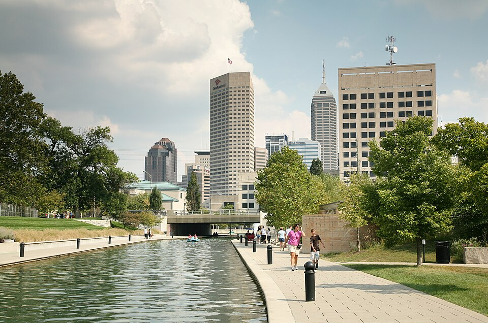
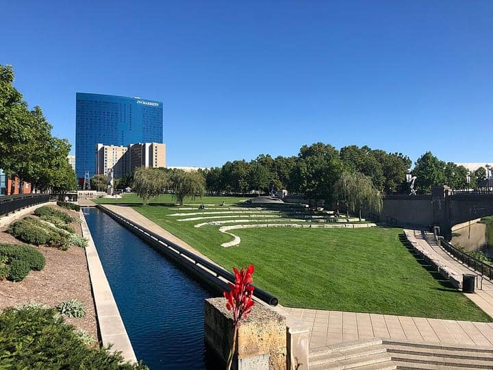
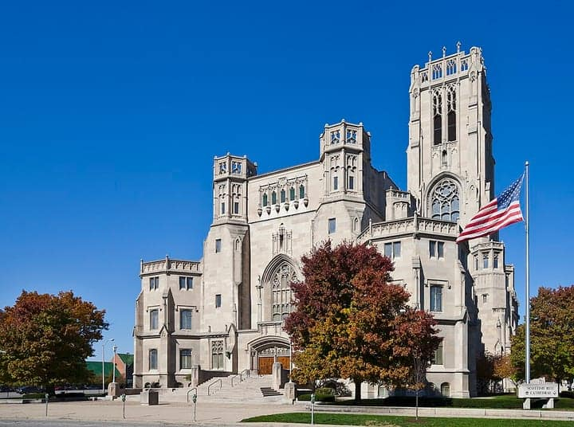
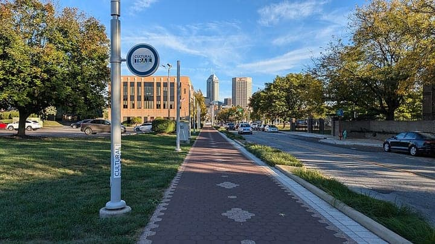
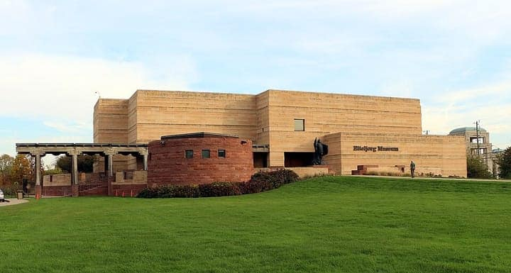

United States
Indianapolis
the Speedway, Mass Ave, the Cultural Trail & a deep immigrant table
156 places · 9 areas · every one sourced, pinned and status-checked · last checked . Ordered by tier, then by number of named sources. How we choose
tenderloin · sugar cream pie · Soldiers' and Sailors' Monument

Start with
Indianapolis
the Speedway, Mass Ave, the Cultural Trail & a deep immigrant table
156 places picked by 50 sources

Downtown & Wholesale District 37 places · area 1 of 9
Monument Circle, White River State Park, Indiana Ave
-
1 Must see within Downtown & Wholesale District
St. Elmo Steak House
Order: The fiery shrimp cocktail (horseradish-loaded sauce, on the menu since 1947) and dry-aged USDA Prime steaks. Indianapolis' defining restaurant, in the Wholesale District since 1902 — bow-tied career servers, dark-panelled rooms, one of the city's great bourbon lists, and the only James Beard Award ever won in Indy (America's Classics, 2012). On Indianapolis Monthly's 2026 Best Restaurants.
127 S Illinois St, Indianapolis, IN 46225
Recommended by , , +2, ,
-
2 Must see within Downtown & Wholesale District
Shapiro's Delicatessen
Order: Corned beef on house rye, the Reuben, potato latkes, matzo ball soup. Kosher-style deli-cafeteria opened as a grocery by Louis and Rebecca Shapiro in 1905, on South Meridian since 1912 — one of the few surviving Jewish delis in the Midwest. Order at the counter; carry your tray.
808 S Meridian St, Indianapolis, IN 46225
Recommended by , , +1,
-
3 Must see within Downtown & Wholesale District
Harry & Izzy's
Order: St. Elmo's shrimp cocktail (the fiery horseradish sauce) and steaks in a less formal room. St. Elmo's sister restaurant and next-door neighbour (1997) — an upscale American grill that shares St. Elmo's famous shrimp cocktail and steaks with a broader menu around a lively bar. On Indianapolis Monthly's Swoon List.
Look for Wholesale District
153 S Illinois St, Indianapolis, IN
Recommended by , , +1,
Photo: alexeatswhales · CC BY 2.0 · Wikimedia Commons (resized) 4 Must see within Downtown & Wholesale District
Soldiers' and Sailors' Monument
The 284-ft neoclassical monument on Monument Circle, dedicated 1902 — the city's signature structure and literal centre of the original Mile Square plan. Free; observation deck and the Civil War museum below.
Look for Monument Circle
Monument Circle, Indianapolis, IN
Recommended by , ,
Photo: Diego Delso · CC BY-SA 3.0 · Wikimedia Commons (resized) 5 Must see within Downtown & Wholesale District
Indiana World War Memorial Plaza
Five city blocks of memorials — the stepped-pyramid Indiana War Memorial (free military museum + Shrine Room), the Obelisk and the American Legion Mall. One of the largest memorial plazas in the US; free.
Indiana World War Memorial Plaza (N Meridian St), Indianapolis, IN
Recommended by , ,

Photo: Momoneymoproblemz · CC BY-SA 4.0 · Wikimedia Commons (resized) 6 Must see within Downtown & Wholesale District
White River State Park
267-acre urban state park on both banks of the White River — the Central Canal walk, the zoo, Eiteljorg, Indiana State Museum, Victory Field and the old Washington Street bridge for walking.
White River State Park, Indianapolis, IN
Recommended by ,

Photo: Diego Delso · CC BY-SA 3.0 · Wikimedia Commons (resized) 7 Must see within Downtown & Wholesale District
Scottish Rite Cathedral
The 1929 Tudor-Gothic Masonic cathedral — the largest Scottish Rite building anywhere, with a 54-bell carillon tower; guided tours.
650 N Meridian St, Indianapolis, IN 46204
Recommended by , ,
-
8 Must see within Downtown & Wholesale District
Madam Walker Legacy Center
The 1927 Madam C.J. Walker Building (NHL) on historic Indiana Avenue — her company HQ and Art Deco theatre, the heart of Black Indianapolis jazz and culture; reopened 2020 after a $15M restoration.
617 Indiana Ave, Indianapolis, IN
Recommended by , ,

Photo: ComplexRational · CC BY-SA 4.0 · Wikimedia Commons (resized) 9 Must see within Downtown & Wholesale District
Indianapolis Cultural Trail
8-mile brick-and-stone bike/walk trail linking the downtown cultural districts with public art along the way — a $63M model for US urban trails. Pin marks a central point on the loop.
Downtown loop (Alabama St / Mass Ave / Virginia Ave / Indiana Ave), Indianapolis, IN
Recommended by , ,
-
10 Must see within Downtown & Wholesale District
Crispus Attucks Museum
Inside Crispus Attucks High School — Indiana's segregated Black high school, whose Oscar Robertson-led team won the 1955 state title — four galleries of African American history from the Underground Railroad to the Tuskegee Airmen.
1140 Dr. Martin Luther King Jr. St, Indianapolis, IN
Recommended by , ,
-
11 Must see within Downtown & Wholesale District · Soul, BBQ & Southern
Slippery Noodle Inn
Order: Live blues on two stages nightly, with bar food. Indiana's oldest continuously operating bar (1850, the Tremont House) — an Underground Railroad stop, Prohibition brewery and brothel before becoming the city's great blues bar; 1890 tin ceiling and century-old oak bar.
372 S Meridian St, Indianapolis, IN
Recommended by , ,
-
12 Must see within Downtown & Wholesale District
Sun King Brewing
Order: Sunlight Cream Ale and Osiris Pale Ale in the production-floor taproom. Indianapolis' largest brewery (2009) in the Cole-Noble district by Lockerbie — all-ages taproom with 25+ taps and tours.
135 N College Ave, Indianapolis, IN
Recommended by , ,
-
13 Must see within Downtown & Wholesale District · Mexican & Latin
Julieta Taco Shop
Order: Al pastor and carnitas on nixtamalized corn tortillas; the broccolini taco. Counter-service taqueria tucked into the Stutz building courtyard (Esteban Rosas & Gabriel Sañudo) — fresh masa tortillas, rotating tacos, lunch only. Named Indiana's best hole-in-the-wall taco joint (Cheapism) and on a national top-100 taco list.
1060 N Capitol Ave, Suite 1-103 (Stutz courtyard), Indianapolis, IN
Recommended by , ,
Photo: Original: Daniel Schwen · CC BY-SA 3.0 · Wikimedia Commons (resized; derivative work by Massimo Catarinella) 14 Must see within Downtown & Wholesale District
Indiana Statehouse
The 1888 Renaissance Revival capitol with a stained-glass rotunda dome; free self-guided and guided tours on weekdays.
200 W Washington St, Indianapolis, IN 46204
Recommended by ,

Photo: Sailko · CC BY-SA 4.0 · Wikimedia Commons (resized) 15 Must see within Downtown & Wholesale District
Eiteljorg Museum
Museum of American Indians and Western Art (1989) in White River State Park — Native contemporary art plus Western painting and sculpture.
White River State Park, Indianapolis, IN
Recommended by ,
-
16 Must see within Downtown & Wholesale District
Indianapolis Zoo
Zoo, aquarium and White River Gardens in White River State Park — dolphins, the Bicentennial orangutan centre, and the first triple-accredited zoo in the US.
White River State Park, Indianapolis, IN
Recommended by ,
-
17 Must see within Downtown & Wholesale District
Lucas Oil Stadium
Retractable-roof home of the Colts (2008) and of the NFL Combine, Final Fours and Big Ten title games.
500 S Capitol Ave, Indianapolis, IN
Recommended by ,
-
18 Must see within Downtown & Wholesale District
Prime 47
Order: Wet-aged prime filet with horseradish–bleu cheese crust; Cajun New York strip. Locally owned steakhouse in the Romanesque Revival Majestic Building, named for its street number — Indianapolis Monthly's 'Indy's Great Steakhouses' pick; WISH has called it Indy's No. 1 steakhouse.
47 S Pennsylvania St (Majestic Building), Indianapolis, IN
Recommended by ,
-
19 Worth the detour within Downtown & Wholesale District
Spoke & Steele
Order: Dry-aged Duroc pork chop; the Spoke Burger; barrel-aged cocktails. Le Méridien's racing-themed, mid-century-modern restaurant and bar — Midwestern comfort food done ambitiously, with barrel-aged cocktails at a brass-edged bar.
Look for Wholesale District
123 S Illinois St (Le Méridien), Indianapolis, IN
Recommended by , , +1,
-
20 Worth the detour within Downtown & Wholesale District
Indianapolis City Market
Public market since 1821 in its 1886 D.A. Bohlen & Son hall (NRHP) — now a food hall; the catacombs of the old Tomlinson Hall lie underneath.
222 E Market St, Indianapolis, IN
Recommended by , ,
Photo: Nyttend · Public domain · Wikimedia Commons (resized) 21 Worth the detour within Downtown & Wholesale District
Central Library
Paul Cret's 1917 Beaux-Arts library on the War Memorial axis, joined to a six-storey glass atrium (2007); free, with the Vonnegut-era reading rooms.
40 E St. Clair St, Indianapolis, IN
Recommended by , ,
-
22 Worth the detour within Downtown & Wholesale District
Christ Church Cathedral
William Tinsley's 1857 English Gothic Revival church — the oldest building on Monument Circle.
131 Monument Circle, Indianapolis, IN
Recommended by , ,
-
23 Worth the detour within Downtown & Wholesale District
Victory Field
The Indianapolis Indians' 1996 ballpark with its lawn seating and skyline view over the outfield — one of the best-loved minor-league parks in the US.
White River State Park, Indianapolis, IN
Recommended by ,
-
24 Worth the detour within Downtown & Wholesale District
Hilbert Circle Theatre
A 1916 'deluxe movie palace' on Monument Circle, restored as home of the Indianapolis Symphony Orchestra (1,660 seats).
Look for Monument Circle
45 Monument Circle, Indianapolis, IN
Recommended by ,

Mass Ave, Lockerbie & the Old Northside 20 places · area 2 of 9

Fountain Square, Fletcher Place & the near south 14 places · area 3 of 9

Midtown 15 places · area 4 of 9
Newfields, Children's Museum, Crown Hill, Butler

Broad Ripple, Meridian-Kessler & SoBro 16 places · area 5 of 9

Speedway & the westside 16 places · area 6 of 9
International Marketplace

Irvington & the east side 12 places · area 7 of 9

North suburbs 13 places · area 8 of 9
Carmel, Fishers, Zionsville, Noblesville, Westfield

South side 13 places · area 9 of 9
Greenwood, Beech Grove, Southport — 'Chindianapolis'
How we choose
Every place is recommended by named sources (review-aggregator star ratings never count as the recommender), pinned to its door from a published coordinate, and status-checked. Closed places stay, flagged, so you know they’re gone.
- Must see
- The places to plan a visit around — graded within each area, not across the city.
- Worth the detour
- Strong picks, worth going out of your way for.
- Deep cut
- For the curious: smaller, odder, more local.
Within each area, places are ordered by tier, then by number of named sources — never by popularity. We don’t add ratings, prices or opening hours of our own. Any quoted in a write-up are the source’s, dated.
Follow changes — an RSS feed of every closure and status check in this guide, for any feed reader.
70 sights and 86 places to eat across Indianapolis — downtown and Monument Circle, Mass Ave, Fountain Square, Broad Ripple, Irvington, the Speedway — plus the north suburbs and the south side. Each is traceable to the source that named it. Indy’s canon is its own: the breaded pork tenderloin sandwich, sugar cream pie, St. Elmo’s fiery shrimp cocktail, Shapiro’s deli, fried biscuits & apple butter, the Burmese/Chin kitchens of the south side and the International Marketplace’s global corridor.
Take Indianapolis with you
Every place, its sources, the Guidebook and the photos at a small size. Map tiles are not saved: offline, the map shows our own pin schematic and every place stays listed.